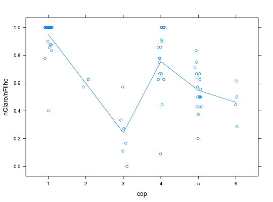

Os dados são de 78 famílias com pelo menos 6 filhos cada
uma. Nestas famílias, codificou-se a cor dos pais e dos avós e o
número total de filhos por casal e o número de filhos com olhos
de cor clara.
Um data.frame com 78 observações e 4 variáveis, em que
cop- Fator de 6 níveis referentes a cor dos olhos dos
pais, com a seguinte codificação: 1 - ambos claros, 2 - ambos
castanhos, 3 - ambos escuros, 4 - claro e castanho, 5 - claro e
escuro e 6: castanho e escuro.
coa- Fator de 15 níveis referentes a cor dos olhos dos
avós, com a seguinte codificação: 1 - todos claros, 2 - todos
castanhos, 3 - todos escuros, 4 - três claros e um castanho, 5 -
três claros e um escuro, 6 - um claro e três castanhos, 7 - um
escuro e três castanhos, 8 - um claro e três escuros, 9 - um
castanho e três escuros, 10 - dois claros e dois castanhos, 11 -
dois claros e dois escuros, 12 - dois castanhos e dois escuros,
13 - dois claros, um castanho e um escuro, 14 - um claro, dois
castanhos e um escuro e 15 - um claro, um castanho e dois
escuros.
nFilho- Número de filhos na família.
nClaro- Número de filhos com olhos claros na família.
Source
PAULA (2004), Exercício 3.7.24, pág. 279.
Examples
library(lattice)
data(PaulaEx3.7.24)
#> Warning: data set ‘PaulaEx3.7.24’ not found
str(PaulaEx3.7.24)
#> 'data.frame': 78 obs. of 4 variables:
#> $ cop : Factor w/ 6 levels "1","2","3","4",..: 1 1 1 1 1 1 1 1 1 1 ...
#> $ coa : Factor w/ 12 levels "1","2","4","5",..: 1 1 1 1 1 1 3 4 4 10 ...
#> $ nFilho: int 6 6 7 8 8 12 12 9 10 6 ...
#> $ nClaro: int 6 5 7 8 8 12 12 9 10 6 ...
xyplot(nClaro/nFilho ~ cop, data = PaulaEx3.7.24, jitter.x = TRUE,
type = c("p", "a"))
